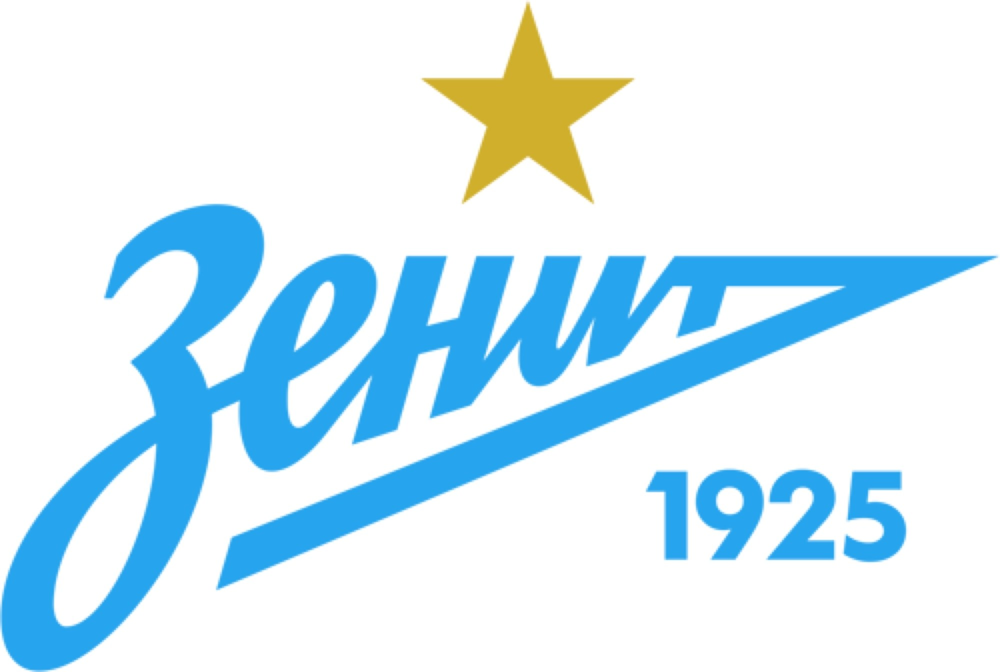

«Зени́т» — советский и российский футбольный клуб из Санкт-Петербурга, выступающий в премьер-лиге. Чемпион СССР 1984, пятикратный чемпион России, обладатель Кубка СССР 1944, трёхкратный обладатель Кубка России, обладатель Кубка сезона 1985, четырёхкратный обладатель Суперкубка России, обладатель Кубка Премьер-лиги 2003, обладатель Кубка УЕФА 2007/08, обладатель Суперкубка УЕФА 2008.
